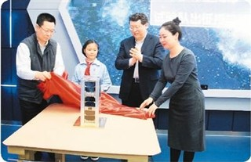
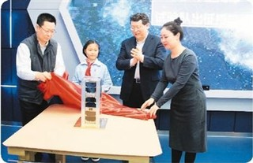

China's Private Aerospace Industry
2019-08-22 10:01:00 Source: People's Network - People's Daily Overseas Edition
 

For today's Chinese space industry, rocket launching and satellite orbiting are common occurrences. However, a recent space launch mission has become a news event with great influence in the field of Chinese space industry and even in the international space industry.。
At the end of July, at Jiuquan Satellite Launch Center in Gansu Province, the hyperbola-1 Yaoyaoshan launch vehicle flew into the sky and launched two satellite loads into orbit accurately. This is a major breakthrough achieved by China's private space forces after years of hard work. It shows that, besides the increasingly powerful "national team" of China's aerospace industry, a number of private aerospace forces have emerged.
See the Rainbow After Wind and Rain
The launch of the hyperbola-1 Yaoyaoshan launch vehicle created two "first" launches in the history of China's private commercial spaceflight, namely, the first successful launch and high-precision orbital launch of China's private commercial spaceflight launch vehicle, and the first "one arrow and two satellites" launch of China's private commercial spaceflight. "Freezing three feet is not a day's cold." Behind these two "first" glories is the hard work and sweat of Chinese private spaceflight professionals who have worked hard for many years.。
Launch vehicle technology is the basic and symbolic technology in the field of aerospace. Only by realizing the rocket flying into the sky and putting the load into the predetermined orbit, can China's private Aerospace truly gain influence and voice. In order to achieve this breakthrough, a group of business people and engineering technicians who are interested in the development of private space industry have made long-term efforts and made many attempts.。
On August 20, 2018, the Suzaku-1 launch vehicle, independently developed by the private enterprise Blue Arrow Space Science and Technology Co., Ltd., was completed. On October 27, Suzaku-1 launched from Jiuquan Satellite Launch Center on board the micro-satellite Futurity. On October 28, the results of the launch mission were released to the public: the first and second stages of the rocket were successfully separated and the fairing was successfully separated. However, due to the abnormal flight process of the third stage, the satellite failed to enter orbit and failed to launch.
On March 27, 2019, the OS-M carrier rocket of Chongqing Liangjiang Star, developed by Zengyi Space Science and Technology Co., Ltd., a private enterprise, ignited at Jiuquan Satellite Launch Center. After the first stage separation, the rocket lost control and the launch mission failed regrettably.
In less than half a year, China's private aerospace enterprises have made two successive attempts to launch rockets, but they have tasted the bitterness of failure. On July 25, the hyperbola-1 long-distance Chang'an Oushang launch vehicle stood on the launching platform, people were full of expectations for its performance, but also implied some share of worries. At 13 o'clock, the launch command center issued a countdown of the launch warning. With the ignition command issued, a fire burst out at the bottom of the rocket, and then rose into the air. After 1088 seconds, the launch commander declared the launch successful. China's private spaceflight has finally taken a glorious step, which is achieved by Beijing Star Glory Space Technology Co., Ltd.
Opening up the Space of Marketing
As a private aerospace enterprise, Beijing Starglory Space Science and Technology Co., Ltd. keeps a close eye on the market. In this historic launch mission, we have fully tapped the commercial value with our partners. On the one hand, we have developed cooperation in satellite launch services, on the other hand, we have made many eye-catching commercial attempts.
The most intuitive commercial attempt is undoubtedly the sale of rocket appearance logo and naming rights. Through launching broadcast pictures and live pictures, people noticed that the rocket body was painted in bright colours, and various colours of letters and logos were sprayed on the white background. Among them, the most noticeable is the bright blue bold "Chang'an Oushang" five big characters, which is the brand name of the latest SUV developed by Chang'an Automobile, a well-known Chinese car company. In the rocket loading chamber, there are equal proportion vehicle models and video greetings of car owners of Chang'an OuShang automobile used to verify the extreme environmental performance of car body materials. The launch has clearly become a good opportunity for the brand promotion of Chang'an Automobile, which matches the image of the "Chang'an Oushang" rocket in the relevant advertisements launched by the company in the mass media.
Load marketing is one of the other commercial operations of Starglory. In addition to the car model mentioned above and the video greetings of the owner, the rocket loading cabin also has a bottle of golden Liufu wine as a souvenir. This is obviously a marketing cooperation between Star Glory Company and Jin Liufu, a well-known Chinese liquor company. With the opportunity of rocket flying into the sky, it aims to enhance the brand image of liquor enterprises and achieve the goal of mutual benefit and win-win. Jin Liufu also used this to advertise to the media, claiming that "a pot of good wine" is "China's first bottle of space liquor". Not only that, but the company also launched 2,000 sets of 16,000 bottles of commemorative wine.
The media paid extensive attention to and gave positive comments on the marketing of the launch. Some even wrote punningly in their reports that China's first successful launch of a private space rocket initiated "cosmic marketing" in China.
Open the upsurge of the first year
With regard to the so-called "first year of private spaceflight in China", people draw different conclusions from different perspectives. Some people set it as 2015 with the establishment of well-known private spaceflight enterprises as the symbol. At that time, including Beijing Nine-day Microstar Technology Development Co., Ltd., Blue Arrow Space Science and Technology Co., Ltd., Beijing Zero-One Space Science and Technology Co., Ltd. and so on, formed the upsurge of private space development.
Some people set "the first year of China's private aerospace industry" as a certain year, marked by the successful participation of private aerospace enterprises in the implementation of important aerospace missions. The representative viewpoint holds that the successful development of satellites led by private aerospace enterprises is an important event in this field, and the year in which they occur can be called "the first year". As a result, 2016 was selected successfully. In November of that year, Xiaoxiang-01 was successfully launched by the Long March 11 launch vehicle and became the first commercial scientific experimental satellite in China. The satellite is a small satellite based on cubic star system made by the celestial Institute of private satellite company. Since then, the company has independently developed and launched a number of satellites, including Xiaoxiang No. 1 02, 03 and 04, TY1-02, Xinghe TY1-03, Changsha High-tech TY4-01, Tongchuan No. 1 TY4-02 and so on.
Among the satellites developed by private aerospace companies, there is a satellite with wide influence and high popularity. This is the first educational sharing satellite in China, Youth Star 1, developed by Beijing Nine-day Microstar Technology Development Co., Ltd. In April 2016, Nine-day Microstar participated in organizing the "China Youth Microstar Program" jointly sponsored by China Song Qingling Foundation and China Association of Science and Technology, which attracted more than 100,000 primary and secondary school students to participate in the creative design of satellite functions. On this basis, the nine-day microsatellite has completed the tasks of satellite development and so on. On February 2, 2018, Juvenile Star 1 was launched from Jiuquan Satellite Launch Center aboard Long March 2 D carrier rocket.
In view of the important position of rocket technology in Aerospace Science and technology, some people regard the year in which the rocket of private company successfully launched the load into orbit as the symbol of "the first year of Chinese private aerospace". Thus, the success of hyperbola No.1 and Chang'an O'Shang launch vehicle made the first year fall in 2019.。
Refueling Comments on International Thermal Review
The successful launch of the hyperbola-1 long-distance Chang'an-Oushan launch vehicle has attracted worldwide attention, which has attracted the attention of renowned international astronauts and international media.
Less than two hours after the success of the launch was announced to the outside world, Elon Musk, the world's commercial space icon and President of SpaceX, in response to an e-mail from a technology media person, praised the launch and said, "Whoa cool!"
Reuters reported the success of the launch in time. After introducing the general situation of the launch, it also reviewed the rocket launching attempts made by several private space companies in China in the past two years. It said that although they had experienced two failures, the Chinese private carrier rocket enterprises had succeeded in this time. The report also introduces the development trend of China's private aerospace enterprises, and points out that with the strong support of national policies, venture capital has entered this field one after another, and the strength of private aerospace enterprises has been continuously strengthened, relying on low-cost advantages, vigorously exploiting market space.
The success of Star Glory's launch indicates the leap in strength of China's private space companies, represented by the company, according to a report on the website of the US science and technology media Space News.A number of private space companies in China are making continuous progress. The report also mentions other private enterprises in China focusing on rocket development, and introduces their technical characteristics and the latest development trend.
The Wall Street Journal has published an analysis of China's private space development goals, saying that China's commercial space technology start-ups are boldly competing with American companies such as SpaceX in the hope of gaining a share of the space market. The article laments the speed of development of private spaceflight in China. It says that few people could imagine that Chinese private enterprises could do this a few years ago. Now, they have made great progress.
(责任编辑：秦迪)